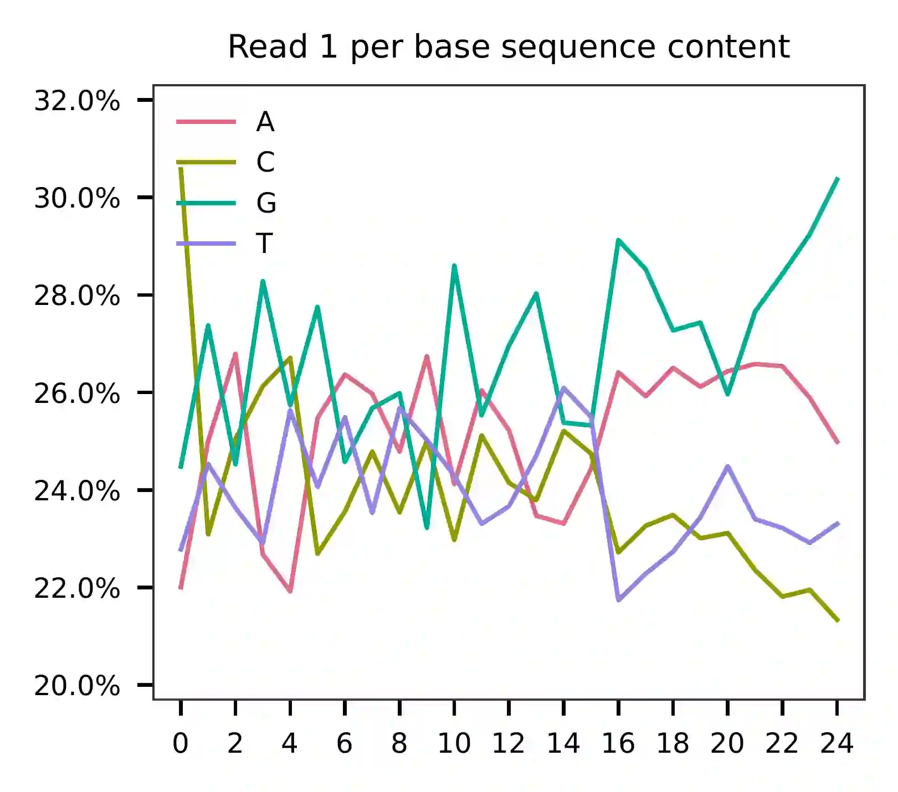
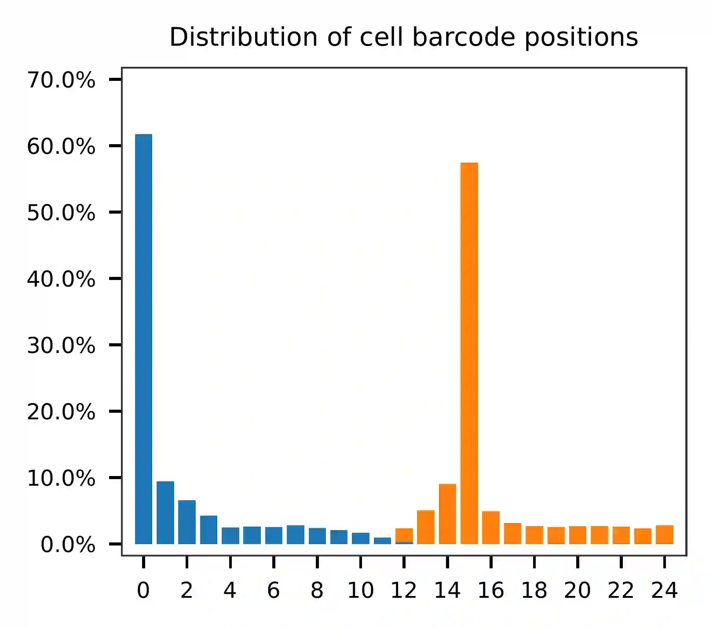
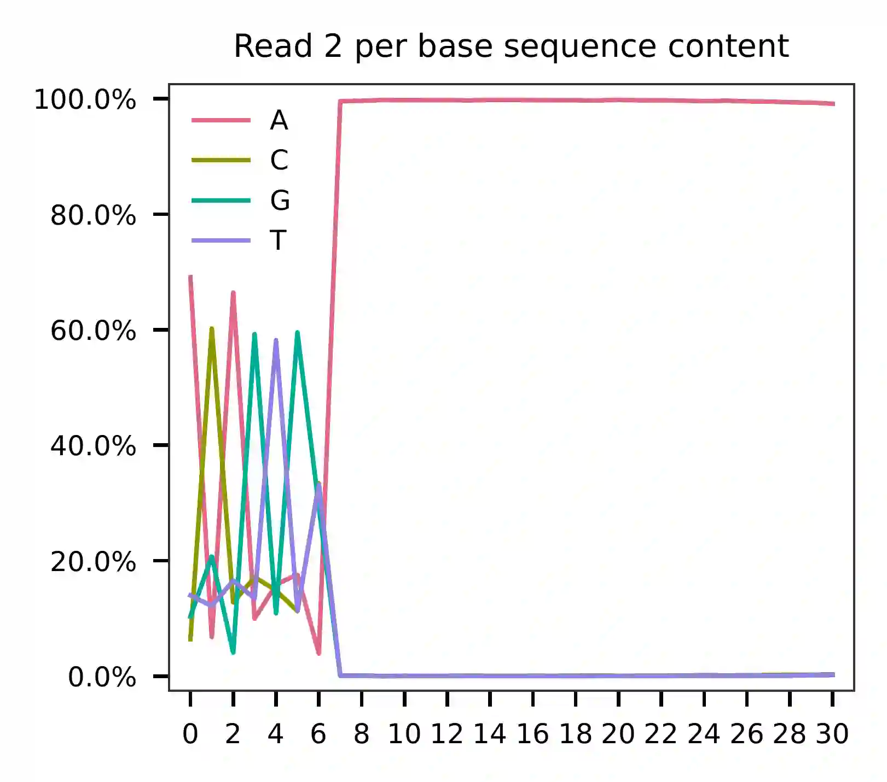
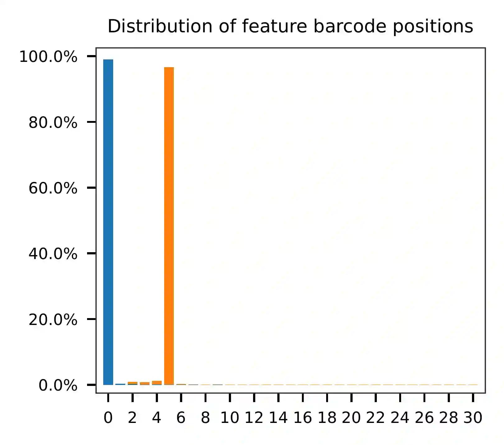

CITE-seq; 8k Cord Blood Mononuclear Cells with 13 Antibodies#
Dataset: CITE-seq
Stoeckius, M., Hafemeister, C., Stephenson, W., Houck-Loomis, B., Chattopadhyay, P.K., Swerdlow, H., Satija, R., and Smibert, P. (2017). Simultaneous epitope and transcriptome measurement in single cells. Nat. Methods 14, 865–868.
Preparation#
Download fastq files from European Nucleotide Archive.
$ curl -O ftp.sra.ebi.ac.uk/vol1/fastq/SRR580/000/SRR5808750/SRR5808750_1.fastq.gz
$ curl -O ftp.sra.ebi.ac.uk/vol1/fastq/SRR580/000/SRR5808750/SRR5808750_2.fastq.gz
Download cell barcode info from Gene Expression Omnibus. These are the cell-associated barcodes in this single cell RNA-Seq library.
$ wget https://ftp.ncbi.nlm.nih.gov/geo/series/GSE100nnn/GSE100866/suppl/GSE100866_CBMC_8K_13AB_10X-ADT_umi.csv.gz
$ gzip -dc GSE100866_CBMC_8K_13AB_10X-ADT_umi.csv.gz | head -1 | sed 's/,/\n/g' | awk 'NF' > cell_barcodes.txt
Inspect cell barcodes.
$ head cell_barcodes.txt
CTGTTTACACCGCTAG
CTCTACGGTGTGGCTC
AGCAGCCAGGCTCATT
GAATAAGAGATCCCAT
GTGCATAGTCATGCAT
TACACGACACATCCGG
TCATTTGGTGTGAAAT
GGGCACTGTGAAGGCT
AACACGTCATTAACCG
CACATAGCAATGCCAT
Prepare feature barcodes (antibody-oligo sequences, from the online methods section of the paper).
$ cat feature_barcodes.tsv
v2_BC1 ATCACG
v2_BC2 CGATGT
v2_BC3 TTAGGC
v2_BC4 TGACCA
v2_BC5 ACAGTG
v2_BC6 GCCAAT
v2_BC8 ACTTGA
v2_BC9 GATCAG
v2_BC10 TAGCTT
v2_BC11 GGCTAC
v2_BC12 CTTGTA
v2_BC13 AGTCAA
v2_BC14 AGTTCC
QC#
Sample the first 100,000 (set by -n) read pairs for quality control.
Use -t to set the number of threads. The diagnostic results and
plots are generated in the qc directory (set by
--output_directory, default qc). By default, full length of read
1 and read 2 are searched against reference cell and feature barcodes,
respectively. The per base content of both read pairs and the
distribution of matched barcode positions are summarized. Use -r1_c
and/or -r2_c to limit the search range. Use -cb_n and/or
-fb_n to set the mismatch tolerance for cell and feature barcode
matching (default 3).
$ fba qc \
-1 SRR5808750_1.fastq.gz \
-2 SRR5808750_2.fastq.gz \
-w cell_barcodes.txt \
-f feature_barcodes.tsv \
--output_directory qc
This library is constructed using Chromium Single Cell 3’ Reagent Kits (v2 Chemistry). The first 16 bases are cell barcodes and the following 9 bases are UMIs (Read 1 length is 25). Based on the base content plot, the GC content of cell barcodes are quite even. The UMIs are slightly G enriched.
 {kind=link}
{kind=link}
As for read 2, based on the per base content, it suggests that bases 0-5 are actually our feature barcodes (See the distribution of matched barcode positions on read 2).
 {kind=link}
{kind=link}
The detailed qc results are stored in
feature_barcoding_output.tsv.gz file. matching_pos columns
indicate the matched positions on reads. matching_description
columns indicate mismatches in substitutions:insertions:deletions
format.
$ gzip -dc qc/feature_barcoding_output.tsv.gz | head
read1_seq cell_barcode cb_matching_pos cb_matching_description read2_seq feature_barcode fb_matching_pos fb_matching_description
CGTAGCGGTTAGTGGGGGGTGGCGC CGTAGCGGTTAGTGGG 0:16 0:0:0 CCCAGGGCCTCGTGGCCGGAGAAACTGCCCA v2_BC1_ATCACG 0:6 3:0:0
ACACTGAGTCCGAAGACTCGTTTGA ACTGAGTCAGTACACT 2:18 3:0:0 GATCAGCAAAAAAAAAAAAAAAAAAAAAAAA v2_BC9_GATCAG 0:6 0:0:0
TTCTTAGGTGGCCCTATCCAGAGAG GCTCCTATCAGAGACG 10:25 0:1:2 ACAGTGCAAAAAAAAAAAAAAAAAAAAAAAA v2_BC5_ACAGTG 0:6 0:0:0
GATCAGTGTCTAAAGATCCGGGCGC GATCAGTGTCGAAAGC 0:16 2:0:0 AGTCAATAAAAAAGAAAAAAAAAAAAAAAAA v2_BC13_AGTCAA 0:6 0:0:0
AACTGGTTCTGGTGTAGATGAATCA CTGGTCTAGAGTAATC 8:24 3:0:0 ATCACGGAAAAAAAAAAAAAAAAAAAAAAAA v2_BC1_ATCACG 0:6 0:0:0
TCAGGATGTTGATTCGACAGTGAAA AGGGATGTCTGATTCT 2:16 1:0:2 GATCAGGAAAAAAAAAAAAAAAAAAAAAAAA v2_BC9_GATCAG 0:6 0:0:0
CTCGAGGAGCCACCTGGAGATACAG CTCCTAGAGCCACCTG 0:16 3:0:0 ACAGTGCAAAAAAAAAAAAAAAAAAAAAAAA v2_BC5_ACAGTG 0:6 0:0:0
GACCTGGTCTTAGCCCCCCAGATCA GACCTGGTCTTAACCT 0:16 2:0:0 GCCAATCAAAAAAAAAAAAAAAAAAAAAAAA v2_BC6_GCCAAT 0:6 0:0:0
NCGGCCAGGGTGTAGCACGGATTGC CTGATAGCAGGGATTG 9:24 2:0:1 ACAGTGCAAAAAAAAAAAAAAAAAAAAAAAA v2_BC5_ACAGTG 0:6 0:0:0
Barcode extraction#
The lengths of cell and feature barcodes are all identical (16 and 6,
respectively). And based on the qc results, the distributions of
starting and ending positions of cell and feature barcodes are very
uniform. Search ranges are set to 0,16 on read 1 and 0,6 on read
2. One mismatch for cell and feature barcodes (-cb_m, -cf_m) are
allowed. And by default, three ambiguous nucleotides (Ns) for read 1 and
read 2 (-cb_n, -cf_n) are allowed.
$ fba extract \
-1 SRR5808750_1.fastq.gz \
-2 SRR5808750_2.fastq.gz \
-w cell_barcodes.txt \
-f feature_barcodes.tsv \
-o feature_barcoding_output.tsv.gz \
-r1_c 0,16 \
-r2_c 0,6 \
-cb_m 1 \
-fb_m 1 \
-cb_n 3 \
-fb_n 3
Preview of result.
$ gzip -dc feature_barcoding_output.tsv.gz | head
read1_seq cell_barcode cb_num_mismatches read2_seq feature_barcode fb_num_mismatches
GGCGTGTGTCCATGATtcatgtatg GGCGTGTGTCCATGAT 0 ACAGTGcaaaaaaaaaaaaaaaaaaaaaaaa v2_BC5_ACAGTG 0
CGACCTTCATAGACTCtacctcgcg CGACCTTCATAGACTC 0 AGTCAAgaaaaaaaaaaaaaaaaaaaaaaaa v2_BC13_AGTCAA 0
CTGATCCTCAATAAGGtcgtttgga CTGATCCTCAATAAGG 0 ACAGTGgaaaaaaaaaaaaaaaaaaaaaaaa v2_BC5_ACAGTG 0
TTGACTTTCACGACTAagtttgggg TTGACTTTCACGACTA 0 AGTCAAtaaaaaaaaaaaaaaaaaaaaaaaa v2_BC13_AGTCAA 0
CGGAGTCAGGAGCGTTatccgtaat CGGAGTCAGGAGCGTT 0 ACAGTGgaaaaaaaaaaaaaaaaaaaaaaaa v2_BC5_ACAGTG 0
TTTGGTTGTAGAGCTGgggcaagta TTTGGTTGTAGAGCTG 0 ACAGTGcaaaaaaaaaaaaaaaaaaaaaaaa v2_BC5_ACAGTG 0
ACCCACTAGACCCACCgaaccttta ACCCACTAGACCCACC 0 GCCAATtaaaaaaaaaaaaaaaaaaaaaaaa v2_BC6_GCCAAT 0
CGGGTCATCTGCGACGgcctttttt CGGGTCATCTGCGACG 0 ACAGTGtaaaaaaaaaaaaaaaaaaaaaaaa v2_BC5_ACAGTG 0
CACATTTGTCATCCCTaccatccgc CACATTTGTCATCCCT 0 ATCACGcaaaaaaaaaaaaaaaaaaaaaaaa v2_BC1_ATCACG 0
Result summary.
30.4% (63,063,944 out of 207,724,395) of total read pairs have valid cell and feature barcodes.
2021-02-17 23:47:41,923 - fba.__main__ - INFO - fba version: 0.0.7
2021-02-17 23:47:41,923 - fba.__main__ - INFO - Initiating logging ...
2021-02-17 23:47:41,923 - fba.__main__ - INFO - Python version: 3.7
2021-02-17 23:47:41,923 - fba.__main__ - INFO - Using extract subcommand ...
2021-02-17 23:47:41,928 - fba.levenshtein - INFO - Number of reference cell barcodes: 8,617
2021-02-17 23:47:41,928 - fba.levenshtein - INFO - Number of reference feature barcodes: 13
2021-02-17 23:47:41,928 - fba.levenshtein - INFO - Read 1 coordinates to search: [0, 16)
2021-02-17 23:47:41,928 - fba.levenshtein - INFO - Read 2 coordinates to search: [0, 6)
2021-02-17 23:47:41,928 - fba.levenshtein - INFO - Cell barcode maximum number of mismatches: 1
2021-02-17 23:47:41,928 - fba.levenshtein - INFO - Feature barcode maximum number of mismatches: 1
2021-02-17 23:47:41,928 - fba.levenshtein - INFO - Read 1 maximum number of N allowed: 3
2021-02-17 23:47:41,928 - fba.levenshtein - INFO - Read 2 maximum number of N allowed: 3
2021-02-17 23:47:42,231 - fba.levenshtein - INFO - Matching ...
2021-02-17 23:51:17,514 - fba.levenshtein - INFO - Read pairs processed: 10,000,000
2021-02-17 23:54:52,641 - fba.levenshtein - INFO - Read pairs processed: 20,000,000
2021-02-17 23:58:27,676 - fba.levenshtein - INFO - Read pairs processed: 30,000,000
2021-02-18 00:02:02,380 - fba.levenshtein - INFO - Read pairs processed: 40,000,000
2021-02-18 00:05:36,809 - fba.levenshtein - INFO - Read pairs processed: 50,000,000
2021-02-18 00:09:11,444 - fba.levenshtein - INFO - Read pairs processed: 60,000,000
2021-02-18 00:12:45,146 - fba.levenshtein - INFO - Read pairs processed: 70,000,000
2021-02-18 00:16:20,131 - fba.levenshtein - INFO - Read pairs processed: 80,000,000
2021-02-18 00:19:54,980 - fba.levenshtein - INFO - Read pairs processed: 90,000,000
2021-02-18 00:23:29,696 - fba.levenshtein - INFO - Read pairs processed: 100,000,000
2021-02-18 00:27:04,208 - fba.levenshtein - INFO - Read pairs processed: 110,000,000
2021-02-18 00:30:38,402 - fba.levenshtein - INFO - Read pairs processed: 120,000,000
2021-02-18 00:34:11,917 - fba.levenshtein - INFO - Read pairs processed: 130,000,000
2021-02-18 00:37:44,939 - fba.levenshtein - INFO - Read pairs processed: 140,000,000
2021-02-18 00:41:18,752 - fba.levenshtein - INFO - Read pairs processed: 150,000,000
2021-02-18 00:44:51,673 - fba.levenshtein - INFO - Read pairs processed: 160,000,000
2021-02-18 00:48:25,440 - fba.levenshtein - INFO - Read pairs processed: 170,000,000
2021-02-18 00:51:58,766 - fba.levenshtein - INFO - Read pairs processed: 180,000,000
2021-02-18 00:55:32,141 - fba.levenshtein - INFO - Read pairs processed: 190,000,000
2021-02-18 00:59:05,690 - fba.levenshtein - INFO - Read pairs processed: 200,000,000
2021-02-18 01:01:50,228 - fba.levenshtein - INFO - Number of read pairs processed: 207,724,395
2021-02-18 01:01:50,228 - fba.levenshtein - INFO - Number of read pairs w/ valid barcodes: 63,063,944
2021-02-18 01:01:50,249 - fba.__main__ - INFO - Done.
Matrix generation#
Only fragments with valid (passed the criteria) cell and feature
barcodes are included. UMI deduplication is powered by UMI-tools
(Smith, T., et al. 2017. Genome Res. 27, 491–499.). Use -us to
set the UMI starting position on read 1 (default 16). Use -ul to
set the UMI length (default 12). Fragments with UMI length less than
this value are discarded. Use -um to set mismatch threshold (default
1). UMI deduplication method is set by -ud (default
directional).
The generated feature count matrix can be easily imported into well-established single cell analysis packages: Seruat and Scanpy.
$ fba count \
-i feature_barcoding_output.tsv.gz \
-o matrix_featurecount.csv.gz \
-us 16 \
-ul 9 \
-um 1 \
-ud directional
Result summary.
54.8% (34,574,243 out of 63,063,944) of read pairs with valid cell and feature barcodes are unique fragments. 16.6% (34,574,243 out of 207,724,395) of total sequenced read pairs contribute to the final matrix.
2021-02-18 01:16:22,447 - fba.__main__ - INFO - fba version: 0.0.7
2021-02-18 01:16:22,447 - fba.__main__ - INFO - Initiating logging ...
2021-02-18 01:16:22,447 - fba.__main__ - INFO - Python version: 3.7
2021-02-18 01:16:22,447 - fba.__main__ - INFO - Using count subcommand ...
2021-02-18 01:16:22,447 - fba.count - INFO - UMI-tools version: 1.1.1
2021-02-18 01:16:22,450 - fba.count - INFO - UMI starting position on read 1: 16
2021-02-18 01:16:22,450 - fba.count - INFO - UMI length: 9
2021-02-18 01:16:22,450 - fba.count - INFO - UMI-tools deduplication threshold: 1
2021-02-18 01:16:22,450 - fba.count - INFO - UMI-tools deduplication method: directional
2021-02-18 01:16:22,450 - fba.count - INFO - Header line: read1_seq cell_barcode cb_num_mismatches read2_seq feature_barcode fb_num_mismatches
2021-02-18 01:18:58,245 - fba.count - INFO - Number of lines processed: 63,063,944
2021-02-18 01:18:58,260 - fba.count - INFO - Number of cell barcodes detected: 8,617
2021-02-18 01:18:58,261 - fba.count - INFO - Number of features detected: 13
2021-02-18 08:12:46,216 - fba.count - INFO - Total UMIs after deduplication: 34,574,243
2021-02-18 08:12:46,244 - fba.count - INFO - Median number of UMIs per cell: 3,816.0
2021-02-18 08:12:46,435 - fba.__main__ - INFO - Done.